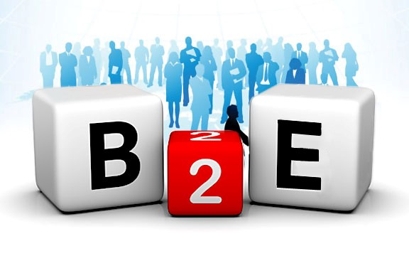

Business-to-employee
El B2E es una plataforma que utilizan las empresas para mantener una relación de comunicación interna con sus empleados. También se puede considerar como una modalidad del comercio electrónico que usan las empresas para mantener una relación comercial de forma interna con sus trabajadores. Para poderlo implementar se utiliza una plataforma online de intranet, que funciona como una web corporativa. De manera que el proceso de comunicación se usa en forma interna para hacer más eficiente las tareas de la empresa en su relación con los empleados, pero además puede usarse como una plataforma comercial entre estos. Su uso va más enfocado a la parte laboral, por lo que parte comercial es un aspecto secundario. En realidad, lo que se espera es lograr reducir costos en los procesos administrativos de la empresa, sobre todo en el uso de tiempo, papeleo y trámites engorrosos. El tipo de comercio electrónico B2E hace referencia a las relaciones comerciales establecidas entre las empresas y sus empleados. De modo que ambos obtienen beneficios de su relación. Un ejemplo del modelo de e-commerce B2E es el utilizado por la compañía AVON, que ofrece a sus distribuidores la oportunidad de adquirir los productos AVON con un descuento que varía según el volumen de ventas conseguido por el distribuidor en cuestión. Todo ello a través de su tienda online. Entonces a esto lo que podríamos decir es que B2E (del inglés business to employee, empresa a empleado) es la relación comercial que se establece entre una empresa y sus propios empleados. Por ejemplo, un hotel puede ofrecer paquetes turísticos a sus empleados a través de su propia intranet y, además de sus ofertas puede incluir las de hoteles o compañías asociadas. El B2E es una nueva demostración de las muchas aplicaciones que ofrece el comercio electrónico. Pero no sólo eso, además el concepto se amplía a la propia gestión remota por parte del empleado de parte de sus responsabilidades dentro de los procesos de negocio de la empresa. Esto podría incluir facturación de comisiones de ventas, introducción de gastos de desplazamiento, etc.